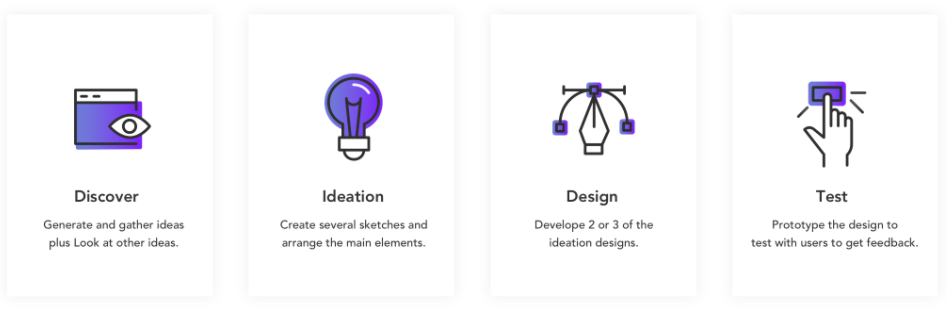
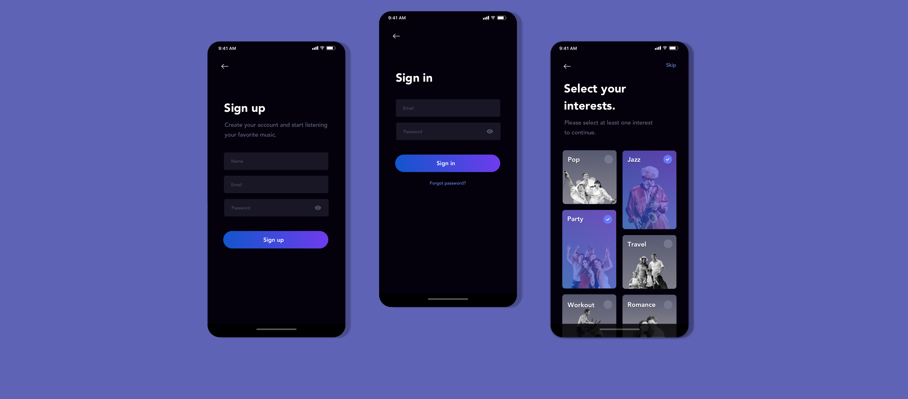
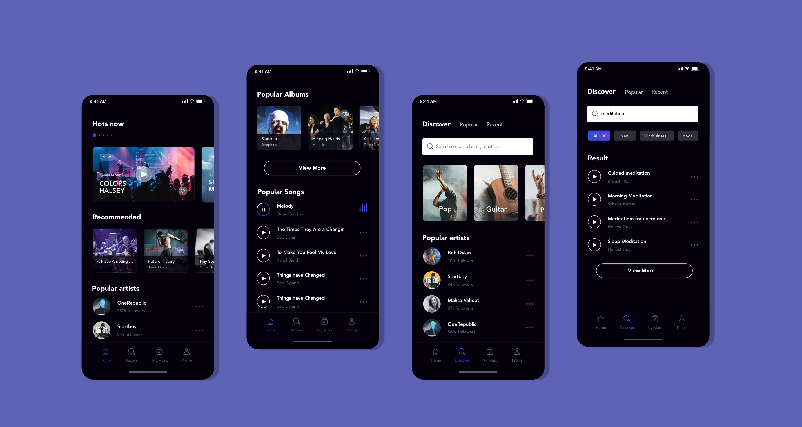
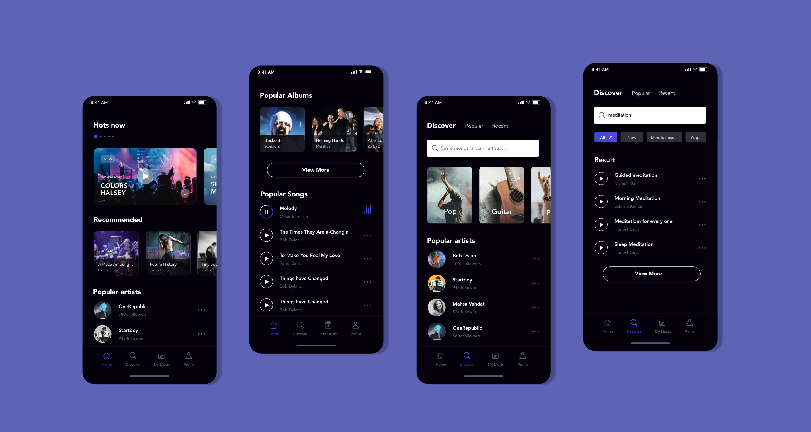
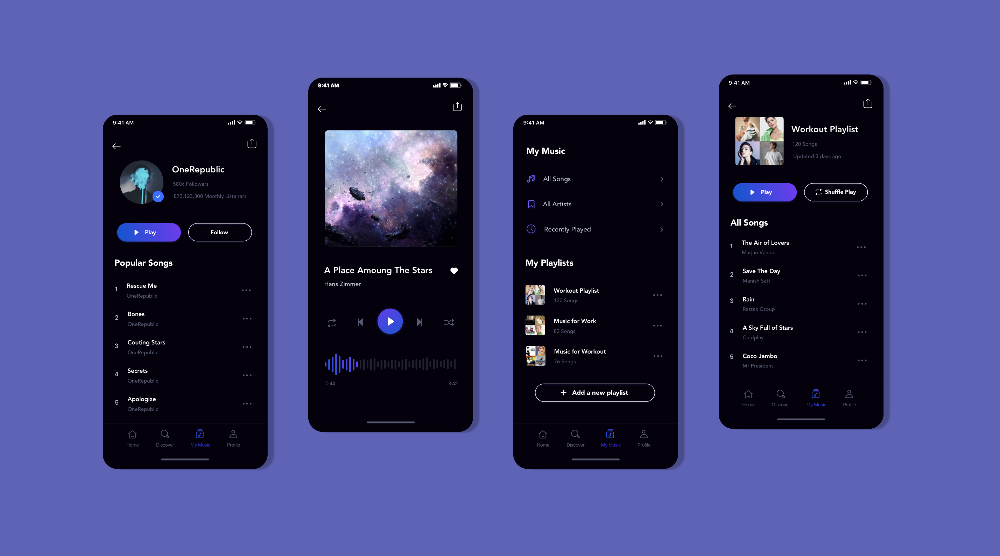
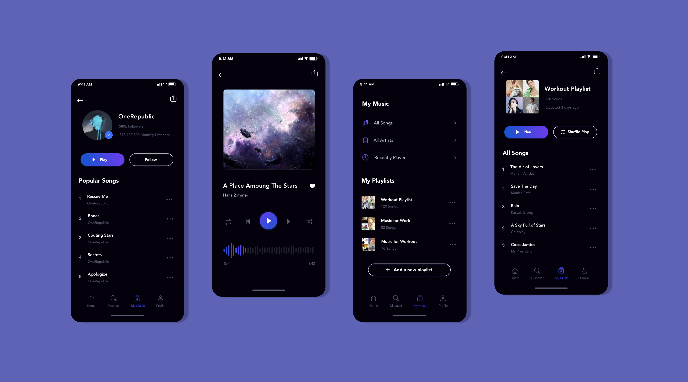

Overview: Musica is a new way to listen to music for All users. With Musica users can listen to the number one songs for any music and other famous international songs.
Timeline: 1.6 Weeks
Tools Used: MockFlow,AdobeXd
My Role: FullStack Designer
Most music apps primary actions are accessible from the hamburger menu then on my redesign of this app tried define the new structure using bottom navigation.
Developing a music mobile app that allows user to search and listen music playlist in a clean and easy to interact interface.
My process will be different in different projects and will be determined by many factors such as the project goals, business needs, complexity of the problem, time and etc. Here I’ll describe my process for solving such small issues.

Sketching and Wireframes I had a list of screens to cover all scenarios so I started to sketching different designs to detail out the flows to discuss and share with end users to get feedback.
Laying the foundation Crafting a Holistic Look and Feel This is a style guide for Musica mobile application. This style guide contains colors, typography, components, buttons, icons, and overlays.
.png)
.png)


As the saying goes, “A good start is half the battle." Before going into user interface design, I made sure to polish the features and user interaction flow. The following feature flowcharts describe the content strategy and user flow through the app, listing potential features users may interact with. The creation of flowcharts are the basis for refining the workload necessary for developers and higher-fidelity designs later on, and for discovering potential issues behind the product in a quick and time-efficient way.
When the users start the app, they will be led through a Sign In or Sign Up and onboarding process before proceeding to their default screen, the Home screen, which houses a footer navbar. The navbar has four tab options:
HOME — where users go to see and explore different songs, albums and artists.
DISCOVER — where users go to browse different songs, albums and artists.
MY MUSIC — where users go to find their saved songs, albums and playlists.
PROFILE — where users go to view their public profile and settings.
Getting Started
Create Account Or Log In Then Choose What Interests You
Here I put some of the screens from the primary actions in this music app. Main screen for discovering new songs or artists plus the browsing page to help users find the song they're looking for.
 

Users can continue listening music from the library in "My Music" screen or from artists profile page. My music page is a place that allows user to search in its own music playlist or even creating new playlist.
 

I envisioned this product can connect Apple watch. I wanted to make the experience as rewarding for the users.

Simplicity is strength. As a designer, we are often lured by attractive, trendy and out of the box designs. But, We must always remember the ‘why’. The primary goal is to understand the user, their problems and then come up with a design that solves it. Process in essential. For a project that is vast, it gives you a roadmap to navigate through what can be a foggy route. This is especially useful when you’re starting out.
Have any suggestion or interested in working together on a project?
Go ahead, I'd love to be social with you.
© Designed and Developed With ❤️ By Lulamile Mkhungela